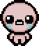
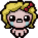
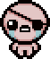
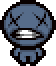
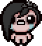
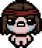
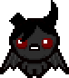
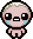
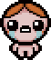
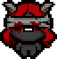

-  Isaac
-  Magdalene
-  Cain
- Judas
-  Blue Baby
-  Eve
-  Samson
-  Azazel
-  Eden
-  Lazarus
- The Lost
-  Lilith
- Keeper


Isaac est le personnage principal de la série, provenant du jeu original Binding of Isaac.
C'est le premier personnage jouable, et débloqué au début du jeu.
Isaac commence avec 3 coeurs, 1 Bombe, et obtient Le D6 une fois débloqué.
Magdalene, ou Maggy, est débloquée lorsque le joueur possède sept cœurs ou plus en une seule partie.
Elle apparaît dans l'original Binding of Isaac.
Madeleine commence avec 4 coeurs et le Yum Heart.
Cain est débloqué lorsque le joueur possède 55 pièces ou plus en une seule partie.
Cain apparaît dans l'original The Binding of Isaac.
Cain commence avec 2 coeurs, 1 Clé et le Lucky Foot.
Judas est un personnage déverrouillé lorsque le joueur bat Satan pour la première fois.
Il est apparaît dans l'original Binding of Isaac.
Judas commence avec 1 coeur, mais a aussi le The Book Of Belial ainsi que 3 pennies.
??? , ou Baby Blue , est déverrouillé lorsque le joueur a vaincu Mom's Heart dix fois.
Il commence avec The Poop et 3 cœurs d'âmes et ne peut ramasser que les cœurs d'âme et les cœurs noirs. Donc, tous les objets qu'il collecte, qui devrait normalement améliorer la santé (fournir un nouveau cœur HUD Red Heart.png) lui donneront à la place un cœur d'âme.
Eve est déverrouillée lorsque le joueur fini deux étages en une seule partie sans ramasser de cœurs.
Elle apparaît dans l'original Binding of Isaac, elle à été ajoutée dans la mise à jour d'Halloween.
Eve commence avec 2 coeurs, le Whore Of Babylon ainsi que le Dead Bird.
Contrairement aux autres personnages, le Whore Of Babylon d'Eve se déclenchera à un cœur rouge plein au lieu d'un demi-cœur.
Samson est déverrouillé lorsque le joueur finit deux étages à la suite sans subir de dégâts.
Il apparaît dans l’extension Wrath of the Lamb.
Contrairement au jeu original, Samson commence avec le Bloody Lust ainsi que 3 coeurs, au lieu de 1 coeur et 1 cœur d'âme.
Chaque fois Samson subit des dégâts, il reçoit une augmentation de dégâts qui se réinitialise quand il descend d'un étage.
Azazel est un nouveau personnage dans The Binding of Isaac: Rebirth déverrouillé en faisant trois offres avec le diable en une seule partie.
Azazel commence avec une version à faible portée de Brimstone , la capacité de voler, la carte 0 - The Fool et trois cœurs noirs sans cœurs normaux, mais à la différence de ???, Azazel peut encore les obtenir avec des objets.
Eden est un nouveau personnage dans The Binding of Isaac: Rebirth débloqué en complétant The Womb pour la première fois.
Chaque fois que Mom’s Heart ou It Lives est battu à la suite avec n’importe quel personnage, Eden Token sera obtenu.
Chaque fois qu'une partie est lancée avec Eden une de ces pièces est consommée et tous les statistiques du personnage sont aléatoires : Coeur (jusqu'à 3, qui peut être coeurs d'âme), statistiques et objets.
Eden commence avec une coiffure différente dans chaque playthrough, mais ce n’est que purement cosmétique.
Lazarus est déverrouillé une fois que le joueur a quatre ou plusieurs coeurs d'âme/coeurs noirs à la fois dans une partie.
Il est un nouveau personnage dans The Binding of Isaac: Rebirth.
Il commence par une portée et une chance légèrement inférieure que celles Isaac, mais a aussi une vie supplémentaire et une pilule au début du jeu.
The Lost commence avec le vol, les larmes spectrales, aucun point de vie (ce qui signifie qu’il mourra toujours de la moindre source de dégâts quelque soit la source), et ne peux en gagner par aucun moyen.
The Lost peut commencer avec Holy Mantle une fois qu'assez de pièce sont donner a la greed machide
Cependant, il peut prendre tout les deals avec satan et Marché noir gratuitement.
Par le passé, The Lost mourrais si une partie était quittée puis reprise, mais ceci a depuis été corrigé à laversion 1.02. Les items de résurrections tel que le Dead Cat marchent toujours, bien qu’ils n’affichent pas le nombre de vie(s) restante(s).
Si le joueur trouve Judas' Shadow, Ankh ou Lazarus' Rags et meurs en tant que The lost, ils ressusciteront en tant que Judas, ???/Blue Baby ou Lazare de manière respective, ce qui causera le jeu à considérer le personnage en tant que tel et non en tant que The Lost. il est donc suggéré d’éviter ces 3 objets si le joueur est intéressé par les items exclusifs à débloquer avec The Lost.
Lilith est un personnage ajoutée dans le DLC Afterbirth.
Lilith commence les yeux bandés ce qui signifie qu'elle n'a pas la capacité à tirer des larmes, elle fait des dégats avec le familier Incubus qui la suit.
Lilith est déverrouillé en finisant mode Greed avec Azazel.